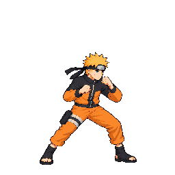
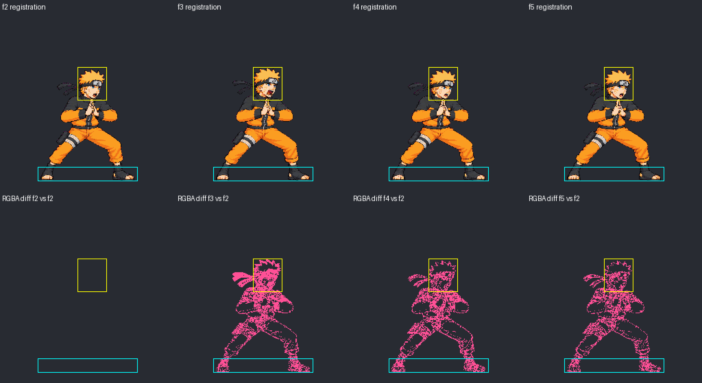
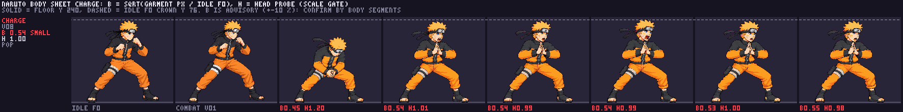

Approved by the user via Claude relay charge #8 (“Approve v08 as drawn”). The six-pose source was promoted unchanged and packed as six 256×256 cells with a 48-color palette. This page shows packed output. Image approval is recorded; the independent technical audit found a loop-contract hold for Claude to review.
f0 gather → f1 release → f2–f5 held loop. Timings: 70, 90, then 110 ms per held frame.
f3 face/head rises 3 px versus f2 (2 px contract maximum); floor-contact contours shift 1–2 px. Overall anatomy appears consistent, but occlusion prevents a numeric ±6% segment pass. No scale exemption or scaleManualQA pass is supported.

Packed cells, aligned on their atlas coordinates. Cyan marks the floor-contact band; the full report explains masks and uncertainty.

